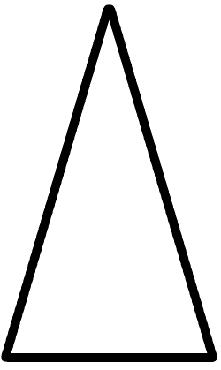
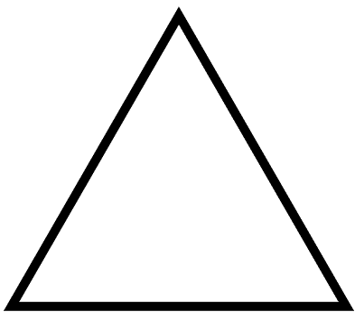

Trojúhelník
Typy
- rovnoramenný 
- rovnostranný 
- obecný (jakýkoliv jiný)
Druhy
- pravoúhlý - 1 úhel 90°
- tupoúhlý - 1 úhel tupý
- ostroúhlý - 1 úhel ostrý
Výšky
přímka kolmá k jedné straně protínající nejvyšší bod trojúhelníku

přímka kolmá k jedné straně protínající nejvyšší bod trojúhelníku